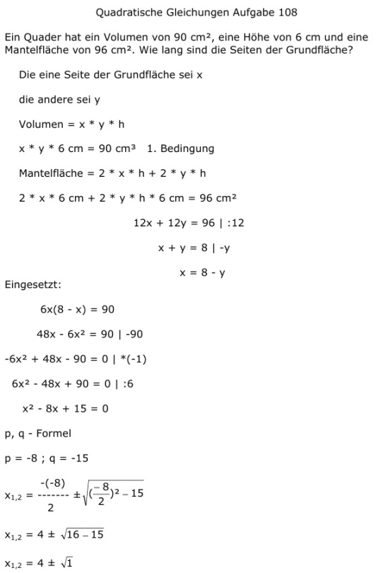

Aufgabe 1058 Ein Quader hat ein Volumen von 90 cm2, eine Höhe von 6 cm und eine Mantelfläche von 96 cm2. Wie lang sind die Seiten der Grundfläche? Die eine Seite der Grundfläche sei x die andere sei y Volumen = x * y * h x * y * 6 cm = 90 cm³ 1. Bedingung Mantelfläche = 2 * x * h + 2 * y * h 2 * x * 6 cm + 2 * y * h * 6 cm = 96 cm2 12x + 12y = 96 |:12 x + y = 8 |-y x = 8 - y Eingesetzt: 6x(8 - x) = 90 48x - 6x2 = 90 |-90 -6x2 + 48x - 90 = 0 |*(-1) 6x2 - 48x + 90 = 0 |:6 x2 - 8x + 15 = 0 p, q - Formel p = -8 ; q = -15  x1,2 = 4 ± 1 x1 4 + 1 = 5 cm längere Seite x2 4 - 1 = 3 cm kürzere Seite